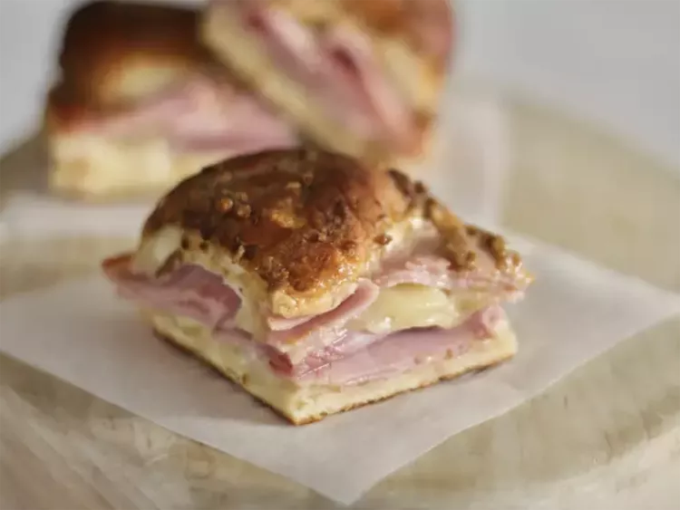

These baked ham and cheese sliders are the most delicious sandwiches and perfect for any party. They are so good that even the pickiest of eaters will eat these.
There's never a bad time to eat irresistibly decadent ham and cheese sliders. These party-friendly sandwiches boast buttery rolls that surround savory deli meat, melted Swiss cheese, and sharp, spicy Dijon mustard.
Whether you're feeding a large crowd or a family of four, these perfectly delicious oven-baked sliders are a surefire way to make it a celebratory occasion. Our community of home cooks gives this easy recipe high marks for flavor and fun factor.
You'll find the full, step-by-step recipe below — but here's a brief overview of what you can expect when you make homemade ham and cheese sliders:
Mini sandwich rolls (Hawaiian sweet rolls are a popular choice) are layered with ham and cheese before being coated with a mixture of butter, Dijon mustard, and dried minced onion.
The result is gooey, tangy, and wholly satisfying sliders that will appeal to every kind of eater. You can opt in or out of the poppy seeds, but they do add a great crunch to the soft, melty texture.
These super savory baked sandwiches make an excellent appetizer or main dish. Serve them along with other small bites like chips and dip, nuts, and fresh fruit for an impressive starter course. Make sliders the centerpiece of your meal by pairing them with sides like grilled asparagus, pasta salad, or roasted potatoes.
Properly stored sliders can last up to two days in the refrigerator. When it's time to reheat, simply cover the ham and cheese sandwiches and bake at 350 degrees F until warmed thoroughly.
Ham and cheese sliders can be made ahead of time and frozen for up to 6 months. Allow slides to thaw overnight before baking.